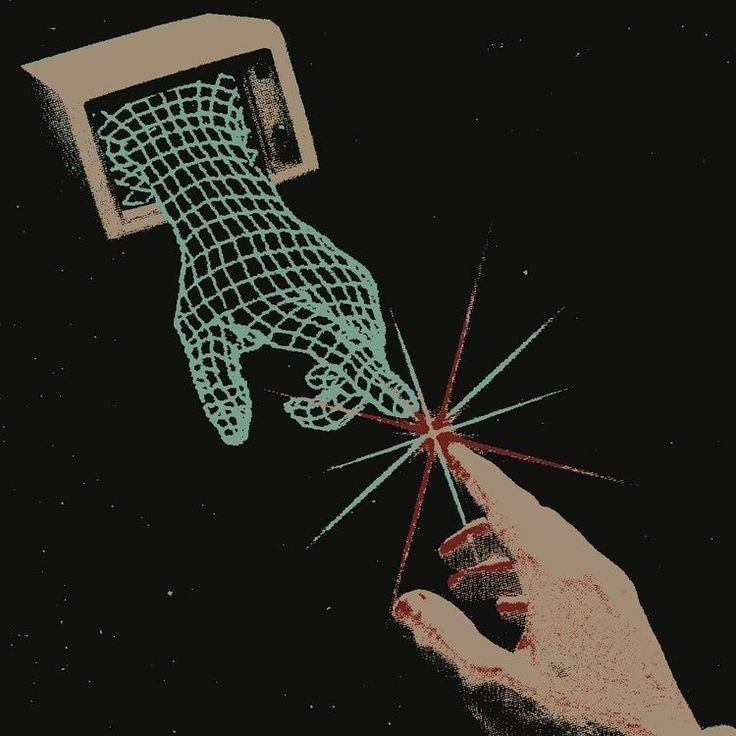

En el escenario geopolítico actual, los dispositivos móviles y las redes de datos se han convertido en los verdaderos campos de batalla. La ciberguerra no se combate únicamente con armas físicas, sino mediante software de vigilancia masiva, troyanos destructivos e ingeniería social orientada a desestabilizar instituciones y capturar datos estratégicos.
Resumen Ejecutivo
Análisis de Actores y Vectores de Ataque
1. Espionaje Estatal mediante Spyware (Pegasus)
Uso de herramientas de vigilancia de alta tecnología diseñadas para la extracción masiva de datos en dispositivos de figuras de alto nivel político. Utilizan vulnerabilidades zero-click para comprometer la seguridad sin interacción directa del usuario.
2. Operaciones Híbridas y Malware Destructivo (Wipers)
Ataques dirigidos a la infraestructura crítica con el fin de provocar caos social y económico. Se combinan con campañas masivas de desinformación en redes sociales para polarizar a la opinión pública.
3. Amenazas Persistentes Avanzadas (APTs)
Infecciones de larga duración orientadas al espionaje industrial, la interceptación de señales estratégicas (SIGINT) y el robo sistemático de propiedad intelectual tecnológica.
4. Ciberdelincuencia Masiva y Quishing
Fraudes dirigidos a usuarios e instituciones mediante técnicas de ingeniería social, códigos QR manipulados en la vía pública y portales WiFi cautivos falsos en puntos de alta concurrencia.
Video Informe Especial
Análisis en video sobre la geopolítica del ciberespacio y las tácticas de defensa digital:
Galería Ilustrativa


Medidas de Ciberhigiene Recomendadas
Para mitigar la exposición ante estos ataques, se aconseja reiniciar periódicamente los dispositivos móviles para cortar ejecuciones maliciosas en segundo plano, utilizar redes privadas virtuales (VPN) en redes públicas, aislar las redes de invitados e inspeccionar la autenticidad física de códigos QR antes de su escaneo.